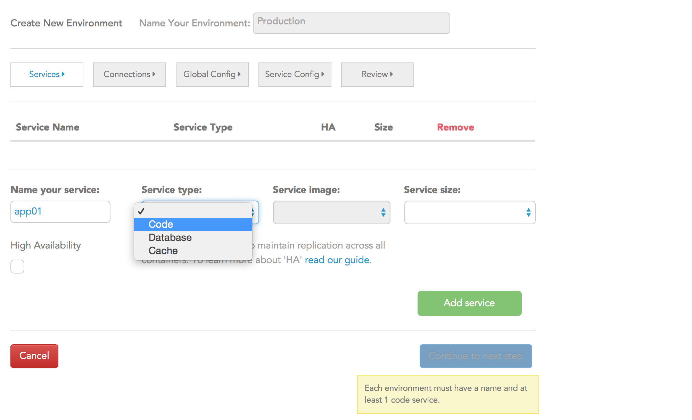
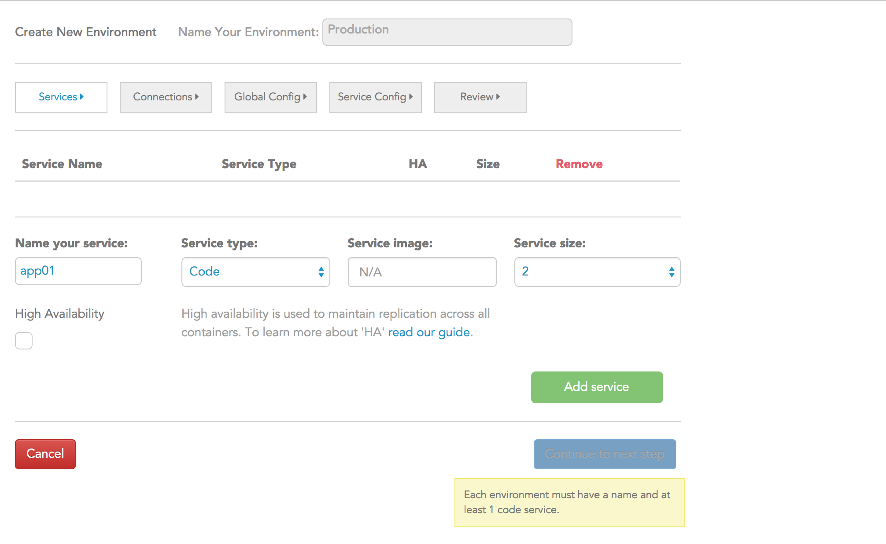
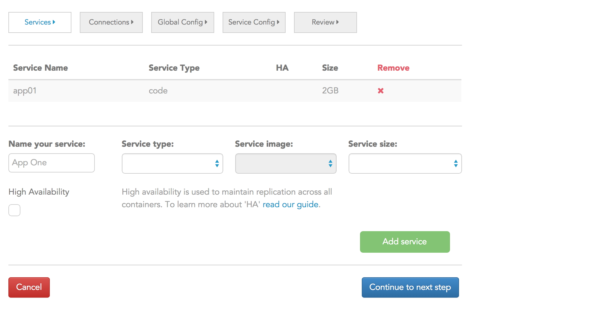
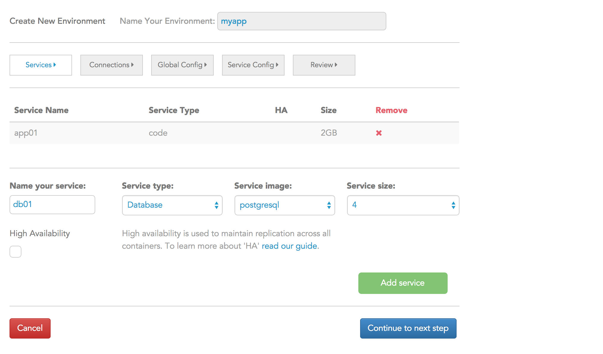
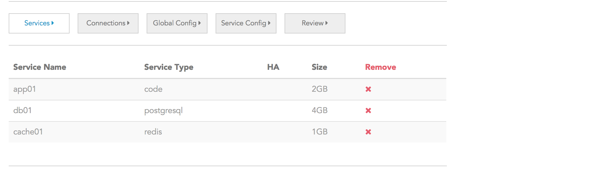
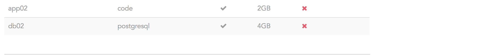

- Introduction to the Catalyze PaaS
- 1. The Catalyze PaaS Architecture
- 2. Deploying your first app
- 3. Accessing your environment
- 4. Updating your environment
- 5. The PaaS CLI
- 6. HIPAA / HISTRUST compliance Features
- Published using GitBook
Define your environment
"So tell me what you want, what you really really want.."
— The Spice Girls
The next step is defining what your environment needs to look like. This is where you go in and specify the number and types of containers you need.
Let's take the case of a simple application which uses Ruby as the application (code) layer and Postgres as the database. As a quick side note, everything inside the Catalyze PaaS is called "service".
Services can be of type
- code i.e. the programming language of your preference viz: Ruby, Java, Python.... This is the application container i.e. where the logic of your application resides.
- database i.e. the database of your choice viz: mongodb, MySQL, and PostgresSQL.
- add-on i.e. services that perform "ancilliary" functions in your app viz: memcache, redis or RabbitMQ.
Step 1: Define your code service
This is the application container i.e. where the logic of your application resides. A full listing of code services we support is available here. Please let us know from the links provided there if you'd like us to support additional ones. In the data entry fields provided, you would enter the following:
- Name of your service: For example, app01
- Service Type: Here you would select "Code" from the Service Type dropdown since this the application container.
- 
Service Size: Sizing essentially corresponds to the amount of RAM you wish to dedicate to this specific service. So, for example, if you know that your app has a pretty high volume of users, you would select 4GB or higher from the dropdown. Or you would select a smaller number if that was appropriate. Let's say we select 2GB in our example. At the end of this set of selections, the screen would look something like this: 
Add Service: Click the Add Service button. You must click this to add it to the list. Once you do that, you will now see the service that you have just defined show up in the listing of services just above as shown below. 
Note the "High Availability" checkbox just below your selections. HA configurations, in the case of the code service type, essentially mean that we will automatically create two identical containers of type code (based on your selections). So in the case of our example, if we'd selected the code option, the Catalyze PaaS would automatically provision two 2GB containers and wire them up to a Load Balancer. This would ensure that your app will be reliably utilized with a minimum of down-time i.e. even if one container / app node fails for some reason, the Load Balancer would automatically remove that connection and route all traffic to the other node. See here-FIXME to read more about HA configurations.
Step 2: Define your database service
Similar to the above steps, you would now do the following to set up your database container.
- Name of your service: Since you are now defining a database service, you could potentially name it as
db01ormy_awesome_db01 - Service Type: Since this is a database service, you would pick "Database" from the Service Type dropdown.
- Service Image: From this dropdown list, you would select the database that you would like to use. The listing shows the current set of databases we currently support. A full listing of databases we support is available here. Please let us know from the links provided there if you'd like us to support additional ones. In the example we're working through, you would now select PostgreSQL from the dropdown listing.
- Service Size: Sizing essentially corresponds to the amount of RAM you wish to dedicate to this specific service. So, for example, if you know that your database has to support a pretty high volume of users, you would select 4GB or higher from the dropdown. Or you would select a smaller number if that was appropriate. Let's say we select 4GB in our example. At the end of this set of selections, the screen would look something like this: 
- Add Service: click the Add Service button. You must click this to add it to the list. Once you do that, you will now see the service that you have just defined show up in the listing of services just above as shown below. You will now see two services being listed - the app01 service and the db01 service.

Note that the HA checkbox is available for databases as well. This is a feature we're really proud of as we have configured PostgreSQL, MySQL and mongoDB in HA clusters with automatic replication. This specific feature will be expanded upon more in an upcoming blog post.
Step 3: Define your cache service (optional)
If your environment calls for a cache service like Memcached or Redis, then select as above. Making some basic selections, your screen will look something like this.

Click on the Add Service button and you should see a listing of services as shown below. Note that HA is NOT available in cache selections.

After you're done defining your environment, click on "Continue to next step". This button will only be enabled if you've named your environment and have at least one code service enabled.
If you had selected HA in the code and database services, then your service listing would look something like this.
